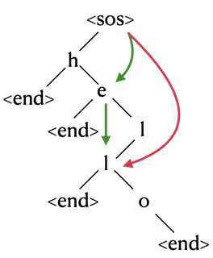

SentencePiece Tokenizer
Contents
SentencePiece Tokenizer#
What is SentencePiece?#
SentencePiece is an unsupervised text tokenizer and detokenizer mainly for Neural Network-based text generation systems where the vocabulary size is predetermined prior to the neural model training.
SentencePiece implements subword units (e.g., byte-pair-encoding (BPE) [Sennrich et al.]) and unigram language model [Kudo.]) with the extension of direct training from raw sentences.
SentencePiece is a pure end-to-end system that does not depend on language-specific pre/postprocessing.
SentencePiece is a general-purpose tokenizer that can be used for any language.
To be surprised, SentencePiece is not a tokenizer itself, but a tool to train a tokenizer.
It is a method to select the best subword units from the corpus optimizing the tokenization process.
It implements the Subword Regularization algorithm.
Technical highlights#
Purely data driven: SentencePiece trains tokenization and detokenization models from sentences. Pre-tokenization (Moses tokenizer/MeCab/KyTea) is not always required.
Language independent: SentencePiece treats the sentences just as sequences of Unicode characters. There is no language-dependent logic.
Multiple subword algorithms: BPE [Sennrich et al.] and unigram language model [Kudo.] are supported.
Subword regularization: SentencePiece implements subword sampling for subword regularization and BPE-dropout which help to improve the robustness and accuracy of NMT models.
Fast and lightweight: Segmentation speed is around 50k sentences/sec, and memory footprint is around 6MB.
Self-contained: The same tokenization/detokenization is obtained as long as the same model file is used.
Direct vocabulary id generation: SentencePiece manages vocabulary to id mapping and can directly generate vocabulary id sequences from raw sentences.
NFKC-based normalization: SentencePiece performs NFKC-based text normalization.
Comparisons with other implementations#
Feature |
SentencePiece |
subword-nmt |
WordPiece |
|---|---|---|---|
Supported algorithm |
BPE, unigram, char, word |
BPE |
BPE* |
OSS? |
Yes |
Yes |
Google internal |
Subword regularization |
Yes |
No |
No |
Python Library (pip) |
Yes |
No |
N/A |
C++ Library |
Yes |
No |
N/A |
Pre-segmentation required? |
No |
Yes |
Yes |
Customizable normalization (e.g., NFKC)[Yes |
No |
N/A |
|
Direct id generation |
Yes |
No |
N/A |
Note that BPE algorithm used in WordPiece is slightly different from the original BPE.
High level differences between SentencePiece and other tokenizers#
The number of unique tokens is predetermined#
Neural Machine Translation models typically operate with a fixed vocabulary.
Unlike most unsupervised word segmentation algorithms, which assume an infinite vocabulary, SentencePiece trains the segmentation model such that the final vocabulary size is fixed, e.g., 8k, 16k, or 32k.
Note that SentencePiece specifies the final vocabulary size for training, which is different from subword-nmt that uses the number of merge operations. The number of merge operations is a BPE-specific parameter and not applicable to other segmentation algorithms, including unigram, word and character.
Trains from raw sentences#
Previous sub-word implementations assume that the input sentences are pre-tokenized.
This constraint was required for efficient training, but makes the preprocessing complicated as we have to run language dependent tokenizers in advance.
The implementation of SentencePiece is fast enough to train the model from raw sentences.
This is useful for training the tokenizer and detokenizer for Chinese and Japanese where no explicit spaces exist between words.
Whitespace is treated as a basic symbol#
The first step of Natural Language processing is text tokenization.
For example, a standard English tokenizer would segment the text “Hello world.” into the following three tokens.
[Hello] [World] [.]
One observation is that the original input and tokenized sequence are NOT reversibly convertible.
For instance, the information that is no space between “World” and “.” is dropped from the tokenized sequence, since e.g.,
Tokenize(“World.”) == Tokenize(“World .”)SentencePiece treats the input text just as a sequence of Unicode characters. Whitespace is also handled as a normal symbol.
To handle the whitespace as a basic token explicitly, SentencePiece first escapes the whitespace with a meta symbol “▁” (U+2581) as follows.
Hello▁World.
Then, this text is segmented into small pieces, for example:
[Hello] [▁Wor] [ld] [.]
Since the whitespace is preserved in the segmented text, we can detokenize the text without any ambiguities.
detokenized = ''.join(pieces).replace('▁', ' ')
This feature makes it possible to perform detokenization without relying on language-specific resources.
Note that we cannot apply the same lossless conversions when splitting the sentence with standard word segmenters, since they treat the whitespace as a special symbol. Tokenized sequences do not preserve the necessary information to restore the original sentence.
(en) Hello world. → [Hello] [World] [.] (A space between Hello and World)
(ja) こんにちは世界。 → [こんにちは] [世界] [。] (No space between こんにちは and 世界)
Subword regularization and BPE-dropout#
Subword regularization [Kudo.] and BPE-dropout Provilkov et al are simple regularization methods that virtually augment training data with on-the-fly subword sampling, which helps to improve the accuracy as well as robustness of NMT models.
To enable subword regularization, you would like to integrate SentencePiece library (C++/Python) into the NMT system to sample one segmentation for each parameter update, which is different from the standard off-line data preparations.
You can find that ‘New York’ is segmented differently on each
SampleEncode (C++)orencode with enable_sampling=True (Python)calls.
%pip install sentencepiece
%pip install --pre ekorpkit
import sentencepiece as spm
spm.SentencePieceTrainer.train(
"--input=../data/sentencepiece/botchan.txt --model_prefix=m --vocab_size=2000"
)
sentencepiece_trainer.cc(177) LOG(INFO) Running command: --input=../data/sentencepiece/botchan.txt --model_prefix=m --vocab_size=2000
sentencepiece_trainer.cc(77) LOG(INFO) Starts training with :
trainer_spec {
input: ../data/sentencepiece/botchan.txt
input_format:
model_prefix: m
model_type: UNIGRAM
vocab_size: 2000
self_test_sample_size: 0
character_coverage: 0.9995
input_sentence_size: 0
shuffle_input_sentence: 1
seed_sentencepiece_size: 1000000
shrinking_factor: 0.75
max_sentence_length: 4192
num_threads: 16
num_sub_iterations: 2
max_sentencepiece_length: 16
split_by_unicode_script: 1
split_by_number: 1
split_by_whitespace: 1
split_digits: 0
treat_whitespace_as_suffix: 0
allow_whitespace_only_pieces: 0
required_chars:
byte_fallback: 0
vocabulary_output_piece_score: 1
train_extremely_large_corpus: 0
hard_vocab_limit: 1
use_all_vocab: 0
unk_id: 0
bos_id: 1
eos_id: 2
pad_id: -1
unk_piece: <unk>
bos_piece: <s>
eos_piece: </s>
pad_piece: <pad>
unk_surface: ⁇
enable_differential_privacy: 0
differential_privacy_noise_level: 0
differential_privacy_clipping_threshold: 0
}
normalizer_spec {
name: nmt_nfkc
add_dummy_prefix: 1
remove_extra_whitespaces: 1
escape_whitespaces: 1
normalization_rule_tsv:
}
denormalizer_spec {}
trainer_interface.cc(350) LOG(INFO) SentenceIterator is not specified. Using MultiFileSentenceIterator.
trainer_interface.cc(181) LOG(INFO) Loading corpus: ../data/sentencepiece/botchan.txt
trainer_interface.cc(406) LOG(INFO) Loaded all 4288 sentences
trainer_interface.cc(422) LOG(INFO) Adding meta_piece: <unk>
trainer_interface.cc(422) LOG(INFO) Adding meta_piece: <s>
trainer_interface.cc(422) LOG(INFO) Adding meta_piece: </s>
trainer_interface.cc(427) LOG(INFO) Normalizing sentences...
trainer_interface.cc(536) LOG(INFO) all chars count=274252
trainer_interface.cc(547) LOG(INFO) Done: 99.957% characters are covered.
trainer_interface.cc(557) LOG(INFO) Alphabet size=69
trainer_interface.cc(558) LOG(INFO) Final character coverage=0.99957
trainer_interface.cc(590) LOG(INFO) Done! preprocessed 4288 sentences.
unigram_model_trainer.cc(146) LOG(INFO) Making suffix array...
unigram_model_trainer.cc(150) LOG(INFO) Extracting frequent sub strings...
unigram_model_trainer.cc(201) LOG(INFO) Initialized 16112 seed sentencepieces
trainer_interface.cc(596) LOG(INFO) Tokenizing input sentences with whitespace: 4288
trainer_interface.cc(607) LOG(INFO) Done! 9165
unigram_model_trainer.cc(491) LOG(INFO) Using 9165 sentences for EM training
unigram_model_trainer.cc(507) LOG(INFO) EM sub_iter=0 size=5926 obj=10.5283 num_tokens=18931 num_tokens/piece=3.19457
unigram_model_trainer.cc(507) LOG(INFO) EM sub_iter=1 size=5232 obj=8.64492 num_tokens=19009 num_tokens/piece=3.63322
unigram_model_trainer.cc(507) LOG(INFO) EM sub_iter=0 size=3923 obj=8.71868 num_tokens=20446 num_tokens/piece=5.21183
unigram_model_trainer.cc(507) LOG(INFO) EM sub_iter=1 size=3922 obj=8.66277 num_tokens=20447 num_tokens/piece=5.21341
unigram_model_trainer.cc(507) LOG(INFO) EM sub_iter=0 size=2941 obj=8.95617 num_tokens=22741 num_tokens/piece=7.7324
unigram_model_trainer.cc(507) LOG(INFO) EM sub_iter=1 size=2941 obj=8.88103 num_tokens=22745 num_tokens/piece=7.73376
unigram_model_trainer.cc(507) LOG(INFO) EM sub_iter=0 size=2205 obj=9.26224 num_tokens=25461 num_tokens/piece=11.5469
unigram_model_trainer.cc(507) LOG(INFO) EM sub_iter=1 size=2205 obj=9.17719 num_tokens=25457 num_tokens/piece=11.5451
unigram_model_trainer.cc(507) LOG(INFO) EM sub_iter=0 size=2200 obj=9.17892 num_tokens=25475 num_tokens/piece=11.5795
unigram_model_trainer.cc(507) LOG(INFO) EM sub_iter=1 size=2200 obj=9.17823 num_tokens=25475 num_tokens/piece=11.5795
trainer_interface.cc(685) LOG(INFO) Saving model: m.model
trainer_interface.cc(697) LOG(INFO) Saving vocabs: m.vocab
s = spm.SentencePieceProcessor()
s.load("m.model")
for n in range(5):
print(
s.encode(
"New York", out_type=str, enable_sampling=True, alpha=0.1, nbest_size=-1
)
)
['▁New', '▁Y', 'or', 'k']
['▁N', 'e', 'w', '▁Y', 'o', 'r', 'k']
['▁New', '▁Y', 'o', 'r', 'k']
['▁N', 'e', 'w', '▁Y', 'o', 'r', 'k']
['▁', 'N', 'e', 'w', '▁Y', 'or', 'k']
Subword Regularization#
Given a sequence of unigrams \(X = (x_1, x_2, \cdots, x_n)\), the probability of the sequence \(X\) is given by the product of the unigram conditional probabilities by the Bayes chain rule:
\[ P(X) = p(x_1) p(x_2 | x_1) \cdots p(x_n | x_1, \cdots, x_{n-1}) = \prod_{i=1}^n p(x_i | x_1, \cdots, x_{i-1}) \]In the problem of Neural Machine Translation, the probability of \(P(Y|X)\) is given by the product of the conditional probabilities of the target sequence \(Y\) given the source sequence \(X\):
\[ P(Y|X;\theta) = \prod_{i=1}^n P(y_i | \mathbf{x}, y_{<i}; \theta) \]where the lower case variables represent the actual tokens, and the upper case variables represent the sequence of tokens. \(\theta\) is the model parameter.
This formula is not actually correct, since \(X\) and \(Y\) can be formed by an exponentailly large number of possible subword sequences.
For example, the word
hellocan be segmented in a number of ways, e.g.,h e l l o,he ll o,hel lo,hell o,hello.Therefore, we should replace \(X\) and \(Y\) on the left with a specific sequence of subwords, \(\mathbf{x}\) and \(\mathbf{y}\), respectively.
The cost function for NMT is given by sum of the expected log-likelihood of the target sequence \(\mathbf{y}\) given the source sequence \(\mathbf{x}\):
\[\begin{split} \mathcal{L}(\theta) = - \sum_{s=1}^{|D|} \mathbb{E}_{\substack{\mathbf{x} \sim P(\mathbf{x}|X^{(s)}) \\ \mathbf{y} \sim P(\mathbf{y}|Y^{(s)})}} \log P(\mathbf{y}|\mathbf{x};\theta) \end{split}\]This formula looks intimidating, but it is actually quite simple.
In practice, we can approximate the expected log-likelihood of a single training example \((\mathbf{x}, \mathbf{y})\).
How to train SentencePiece#
Assume that we have a large collection of bigrams, greater than what we ultimately want to use in our model.
To train a SentencePiece model, we want to maximize the probability of obtaining a particular tokenization \(X = (x_1, x_2, \cdots, x_n)\) of the corpus, given the unigram probabilities \(p(x_i), p(x_2), \cdots, p(x_n)\).
The actual tokenization \(X\) is not observed, we only observe the un-tokenized sequence \(X\).
This is a classic problem of maximum likelihood estimation, and we can solve it by the EM algorithm.
The problem is that thte \(x_i\) are all of different lengths, and we cannot apply the EM algorithm directly.
Instead, we should use a Bayesian approach to solve this problem.
The SentencePiece training objective is given by the following equation:
where the \(\mathbf{x}\) is a unigram sequence, and \(S(\mathbf{x})\) is the set of all possible sequences that can be generated from \(\mathbf{x}\).
The steps are as follows:
Initialize the unigram probabilities \(p(x_i)\). The frequency of each unigram is used as the initial value.
M-step: Compute the most likely sequence \(\mathbf{x}\) given the current unigram probabilities \(p(x_i)\).
E-step: Given the current most likely sequence \(\mathbf{x}\), update the unigram probabilities \(p(x_i)\). In Bayesian setting, the unigram probabilities are defined as:
\[ p(x_i | \mathbf{x}) = \frac{c_i}{\sum_{j=1}^{|V|} c_j} \implies \frac{e^{\psi(c_i)}}{\sum_{j=1}^{|V|} e^{\psi(c_j)}} = \frac{e^{\psi(c_i)}}{e^{\psi(\sum_{j=1}^{|V|} c_j)}} = \frac{e^{\psi(c_i)}}{e^{\psi(c_1) + \cdots + \psi(c_n)}} \]where \(c_i\) is the frequency of the unigram \(x_i\) in the corpus, \(|V|\) is the size of the vocabulary, and \(\psi(c_i)\) is the digamma function.
Repeat the M-step and E-step until the unigram probabilities converge. The log-likelihood is monotonically increasing, so we can stop the training when the log-likelihood does not increase for a certain number of iterations.
from ekorpkit import eKonf
from ekorpkit.tokenizers.trainers.unigram import UnigramTrainer
sp = UnigramTrainer()
Initialize the unigram probabilities \(p(x_i)\). The frequency of each unigram is used as the initial value.
eKonf.viewsource(sp.initialize_vocab)
def initialize_vocab(self, words):
word_freqs = self.get_word_freqs(words)
sorted_subwords, characters = self.initialize_subwords(word_freqs)
alphabet = {char: 0 for char in self.initial_alphabet if char not in characters}
tokens = list(characters.items()) + sorted_subwords + list(alphabet.items())
tokens = {token: freq for token, freq in tokens}
tokens = collections.Counter(tokens)
return tokens, characters
M-step: Compute the most likely sequence \(\mathbf{x}\) given the current unigram probabilities \(p(x_i)\).
eKonf.viewsource(sp.M_step)
def M_step(self, text, trie):
loss, p = self.forward_step(text, trie)
tokenization = self.backward_step(text, p)
return tokenization, loss
E-step: Given the current most likely sequence \(\mathbf{x}\), update the unigram probabilities \(p(x_i)\).
eKonf.viewsource(sp.E_step)
def E_step(self, tokenization, trie):
# get the new token counts based on updated tokenization
counts = collections.Counter(tokenization)
norm = sum(list(counts.values()))
# we are returning the log probabilties here (alpha=0 prior)
logsum = digamma(norm)
for k, v in counts.items():
counts[k] = digamma(v) - logsum
for k, v in counts.items():
trie.set_value(k, v)
return trie
Repeat the M-step and E-step until the unigram probabilities converge.
eKonf.viewsource(sp.EM_round)
def EM_round(self, text, tokens, delta=0.01, n_iterations=10):
tokenization, old_loss = self.M_step(text, self.trie)
for step in range(n_iterations):
print(f"EM iter {step}: ", end="")
loss, tokenization, trie = self.EM_step(text, tokenization, self.trie)
print(f"Loss={loss:.2f}")
if abs(old_loss - loss) < delta:
break
old_loss = loss
Finding the optimal segmentation#
If all of the subwords were of the same length, we could apply the Viterbi algorithm to find the optimal segmentation.
The Viterbi algorithm is a dynamic programming algorithm that finds the most likely sequence of states, given a sequence of observations and a model of the transition probabilities between states and the emission probabilities of the observations given the states.
You have some hidden states \(z_1, z_2, \cdots, z_n\), and you want to transition from \(z_1 \rightarrow z_2 \rightarrow \cdots \rightarrow z_n\), and you know the transition matrix \(A_{ij}\), giving the probability of transitioning from \(z_i^{(1)}\) to \(z_j^{(2)}\), where \(i\) and \(j\) are the hidden states, and the superscript indicates the sequence order.
The problem is that \(A\) is not between adjacent states.
Consider tokenizing the word
hellogiven the subwords {he,h,ll,e,o,hell}.We can generate the following figure:
Each arrow represents a transition, and the weight of the arrow is the probability of the transition.
The goal is to pick arrows that we arrive at
<eos>(end of sequence) with the highest probability.
This problem has optimal substructure, so we can apply dynamic programming to solve it.
For example, assume that we are at the state (4).
There are three arrows that can lead to the state (4), a red, a blue, and a green arrow.
The highest probability at the state (4) is just the best path from the previous state, plus the probability of the transition.
\[ p_i = \max_{j \le i} (p_j p_{j \rightarrow i}) \]
The Trie structure is used to find the optimal segmentation.
The Trie structure is a tree structure that is used to store a set of strings.
The following figure shows the Trie structure for the subwords {
h,he,hell,hello}:
The root node is the start of the sequence,
<sos>.Any time we encounter an
endnode, it means that everything in the path from<sos>toendis a valid subword.The root node
<sos>will begin with exactly one branch for every unique first character in the vocabulary.As we grow the available subwords, we create more branches.
The Trie is going to be the fundamental data structure that the tokenizer uses to store and retrieve the subwords.
eKonf.viewsource(sp.initialize_trie)
def initialize_trie(self, tokens):
trie = Trie()
norm = sum(list(tokens.values()))
logsum = digamma(norm)
maxlen = 0
for tok, val in tokens.items():
trie.add(tok, digamma(val) - logsum)
maxlen = max(maxlen, len(tok))
return trie, maxlen
Fitting the model#
One of the algorithm for finding the optimal sequence from the Trie is a forwards-backwards algorithm.
It is a special subset of the sum-product algorithm for training directed graphical models.
More sophisticated algorithms include the Forward-DP Backward-A* algorithm, and the Forward-Filtering and Backward-Sampling algorithm (FFBS).
When we compute the forward step, we also store the length of the longest subword that ends at the current position.
This allows us to backtrack from the end of the sequence to the beginning, and find the optimal segmentation, since the length of the arrow is the length of the subword.
The EM step puts together the E step and the M step, where the E step is updating the Trie, and the M step is finding the optimal segmentation using the forwards-backwards algorithm explained above.
Then, fitting the model is just a matter of repeating the EM step until the log-likelihood converges.
One more thing to consider is to get the desired vocabulary size by pruning the vocabulary.
First, prepare more subword tokens than the desired vocabulary size.
After each EM step, remove the least probable, say 10%, of the subwords.
Repeat this process until the desired vocabulary size is reached.
eKonf.viewsource(sp.forward_step)
def forward_step(self, text, trie):
N = len(text)
# d[i] contains the maximum log_prob of any tokenization
# of text[:i], initialized to 0 (i.e. log(0)=-infty)
d = [-np.inf] * (N + 1)
# p[i] (stands for parent) contains the number of characters of
# the final token in the most likely sequence that ends at index i
p = [None] * (N + 1)
d[0] = 0
for i in range(1, N + 1):
# find all possible final words. Have to look back
# a distance set by the length of the longest token
for j in range(max(i - self.maxlen, 0), i):
final_token = text[j:i]
final_value = trie.get_value(final_token)
# if the current ending word has a higher log-probability,
# save that value and store the word (i.e. # chars to backtrack)
if final_value and d[j] + final_value > d[i]:
d[i] = d[j] + final_value
p[i] = len(final_token)
if p[i] is None:
raise ValueError(f"Encountered unknown token '{text[i-1]}'.")
loss = d[-1]
return loss, p
eKonf.viewsource(sp.backward_step)
def backward_step(self, text, p):
idx = len(p)
tokenization = []
while idx > 1:
# move back the number of steps p tells you to
next_idx = idx - p[idx - 1]
# extract the final token
tok = text[next_idx - 1 : idx - 1]
tokenization.append(tok)
idx = next_idx
tokenization = list(reversed(tokenization))
return tokenization
Subword sampling#
To find alternative segmentations, we can save the n-best paths in the forward-backward step.
Now, we can sample from the n-best paths to find alternative segmentations.
Implementation#
from ekorpkit import eKonf
cfg = eKonf.compose("path")
cfg.cache.uri = "https://github.com/entelecheia/ekorpkit-book/raw/main/assets/data/us_equities_news_sampled.zip"
data = eKonf.load_data("us_equities_news_sampled.parquet", cfg.cached_path)
texts = data.text[:1000]
from ekorpkit.tokenizers.sentencepiece import SentencePieceUnigramTokenizer
texts = data.text[:100]
vocab_size = 5000
sp = SentencePieceUnigramTokenizer()
sp.train_from_iterator(
texts, vocab_size=vocab_size, min_frequency=10, initial_alphabet=[".", "!", "?"]
)
--- Round 1. Vocab size: 9641 ---
EM iter 0: Loss=-596166.15
EM iter 1: Loss=-593240.93
EM iter 2: Loss=-592453.62
EM iter 3: Loss=-592143.08
EM iter 4: Loss=-592028.75
--- Round 2. Vocab size: 7231 ---
EM iter 0: Loss=-616021.42
EM iter 1: Loss=-615565.28
EM iter 2: Loss=-615379.74
EM iter 3: Loss=-615290.66
EM iter 4: Loss=-615283.06
--- Round 3. Vocab size: 5424 ---
EM iter 0: Loss=-640810.86
EM iter 1: Loss=-640411.09
EM iter 2: Loss=-640241.08
EM iter 3: Loss=-640186.43
EM iter 4: Loss=-640155.71
sp.save("../data/tokenizers", "sp_unigram", pretty=True)
['../data/tokenizers/sp_unigram/vocab.json',
'../data/tokenizers/sp_unigram/config.json']
from ekorpkit.tokenizers.sentencepiece import SentencePieceUnigramTokenizer
sp = SentencePieceUnigramTokenizer.load("../data/tokenizers", "sp_unigram")
sequence = "Investment opportunities in the company."
print(sp._tokenizer.normalize(sequence))
print(sp._tokenizer.pre_tokenize(sequence))
print(sp._tokenizer.generalized_forward_step("▁company.", sp._tokenizer.trie, 1))
investment opportunities in the company.
['▁Investment', '▁opportunities', '▁in', '▁the', '▁company.']
[None, [1], [2], [3], [4], [5], [6], [7], [8], [1]]
for i in range(5):
tokenized_text = sp.tokenize(sequence, nbest_size=5)
print(i, tokenized_text)
0 ['▁', 'investment', '▁opportun', 'iti', 'es', '▁i', 'n', '▁', 'th', 'e', '▁co', 'mpany', '.']
1 ['▁', 'in', 'vestment', '▁opportuni', 'ties', '▁', 'in', '▁', 'th', 'e', '▁', 'company', '.']
2 ['▁', 'investment', '▁o', 'pportuni', 't', 'ies', '▁', 'i', 'n', '▁the', '▁', 'company', '.']
3 ['▁investment', '▁', 'op', 'port', 'un', 'it', 'i', 'es', '▁', 'i', 'n', '▁the', '▁', 'c', 'o', 'mpany', '.']
4 ['▁', 'investmen', 't', '▁', 'opport', 'un', 'itie', 's', '▁in', '▁', 'th', 'e', '▁', 'compan', 'y', '.']